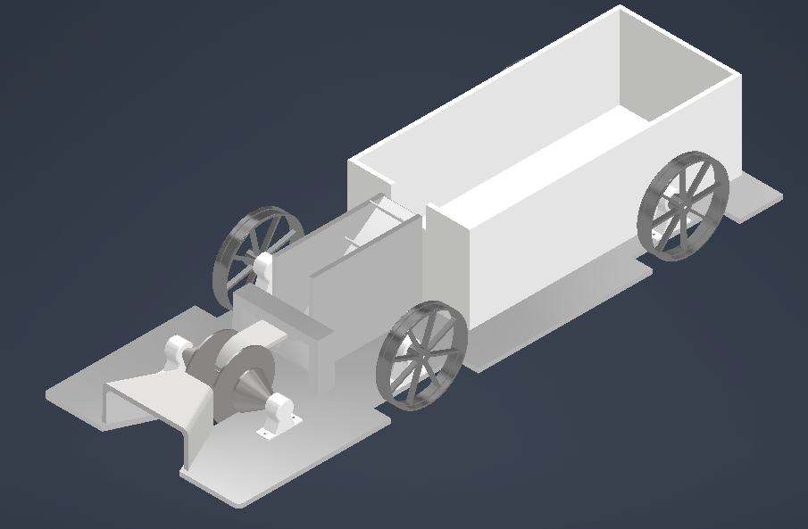
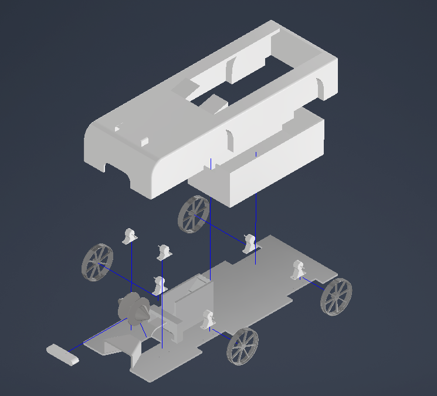

Overview
TenniCollect is a mechatronics engineering project focused on designing and developing a fully autonomous robot that can locate and collect tennis balls from a court surface. The project required integrating mechanical design, electronics, sensors and software into a functional robotic system.
The robot is designed to navigate the court independently, detect tennis balls using sensor input, and collect them efficiently using a purpose-built collection mechanism — without requiring human intervention during operation.
System Design
- Mechanical chassis designed in CAD for stability and manoeuvrability
- Tennis ball detection using sensor array and signal processing
- Motor control system for directional movement and speed regulation
- Autonomous navigation and path planning algorithm
- Collection mechanism for ball pick-up and storage
- Sensor fusion for reliable environmental awareness
- Embedded control software for real-time decision making
- Modular design to allow component upgrades and testing
Technologies Used
Gallery

Chassis — isometric render with wheels and intake

Full assembly — body shell render

Exploded view — chassis, body and component layout
Challenges
Achieving reliable tennis ball detection across varying lighting conditions and court surface reflections was one of the most significant technical challenges. Sensor noise and false positives required signal processing and filtering to produce stable detection output the control system could act on confidently.
Designing a compact collection mechanism that could reliably pick up balls without jamming — while fitting within the overall chassis dimensions — required multiple design iterations and physical testing. Integrating the mechanical and software subsystems so they responded to each other in real time added further complexity.
What I Learned
This project gave me hands-on experience with the full mechatronics design cycle — from concept and CAD modelling through to physical prototyping and software integration. Working with real sensors taught me how much raw sensor data differs from idealised textbook models, and how important filtering and calibration are in practice.
Designing autonomous navigation for a physical environment highlighted how quickly edge cases emerge in the real world. I developed a much deeper appreciation for robust system design, testing under real conditions, and the iterative nature of engineering development.
Engineering Report
The full engineering report covers the design requirements, mechanical analysis, sensor selection, CAD drawings, test results and performance evaluation for TenniCollect.
Engineering Drawing Report
Complete technical report including CAD drawings, specifications and test results.
Future Improvements
- Implement computer vision for more accurate and robust ball detection
- Add a wireless monitoring interface for real-time status and telemetry
- Improve path planning to achieve full systematic court coverage
- Optimise the collection mechanism for higher throughput and reliability
- Explore multi-robot coordination for simultaneous court coverage